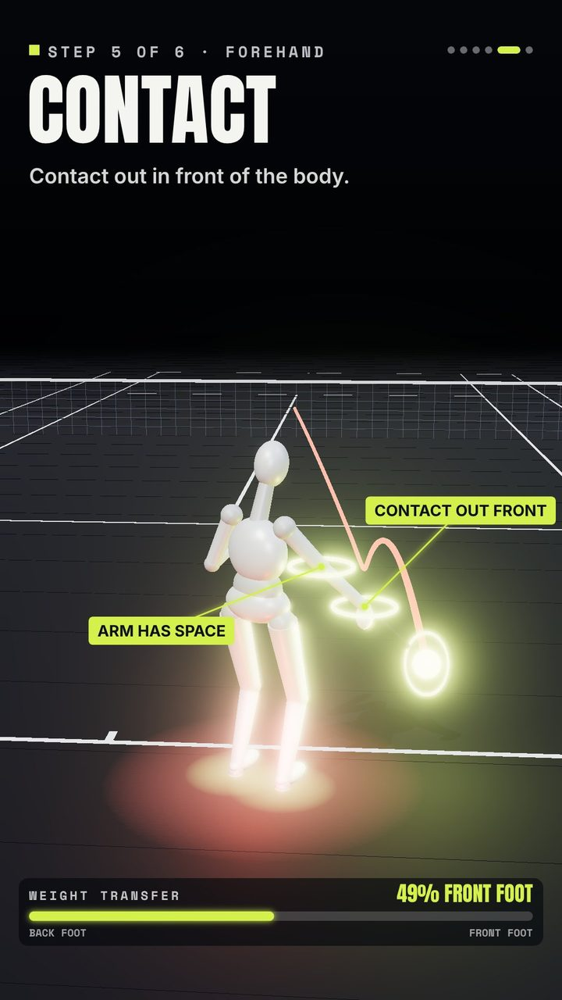
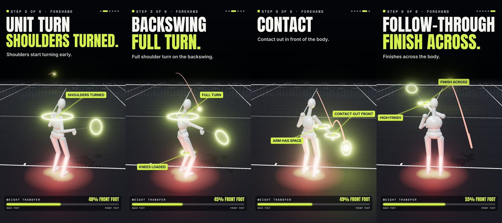
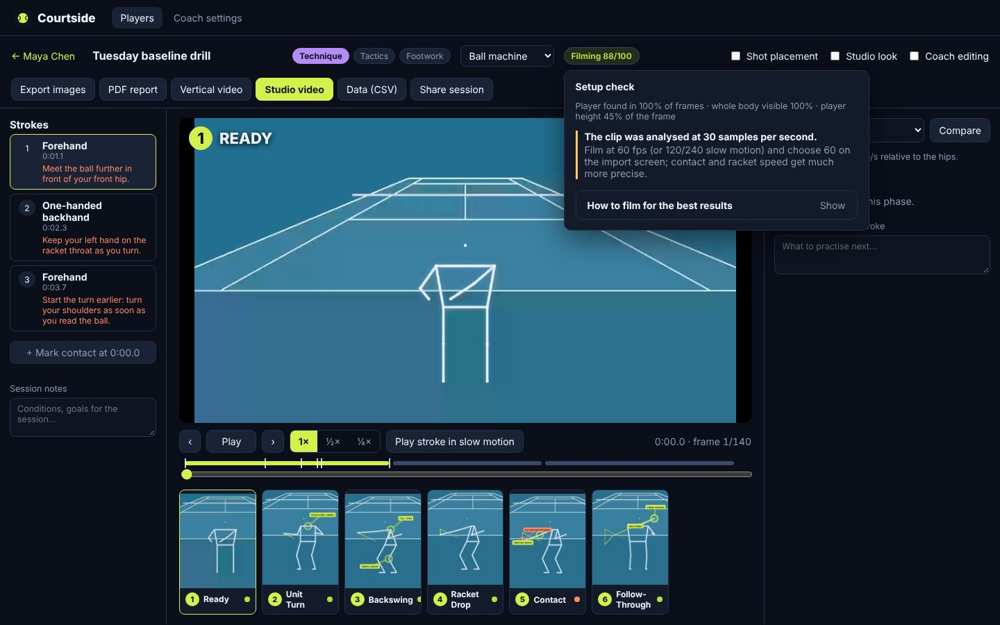
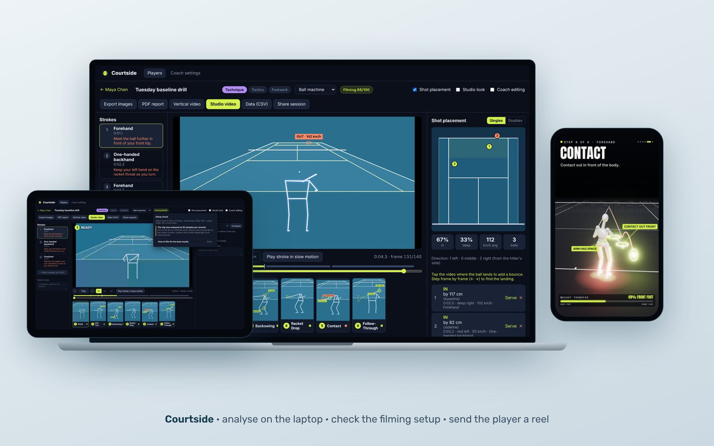

Session types
Rally, ball machine, coach feed, serves or match
Tag each session with how the balls arrived and filter a player's history by it.
Tennis video analysis for players and coaches
Courtside breaks down every forehand, backhand and serve from a phone video, calls your bounces in or out, and tells you the one thing to work on next.
Windows · macOS · LinuxWorks offlineVideo never leaves your computer

What it does
Import a clip. Courtside tracks the player's body frame by frame, finds each swing, names it and splits it into the phases coaches teach.
Ready, unit turn, backswing, racket drop, contact and follow-through, with the trophy position on serves. Each phase is measured in 3D and checked against target ranges you can tune as a coach.

Tap the four corners of the singles court once. Then tap where each ball lands. Courtside maps the bounce onto the court and makes the call, down to the centimetre.
The studio look rebuilds the player as a 3D mannequin on a virtual court with the racket path, ball flight and weight transfer. Export a 1080×1920 slow-motion reel, a carousel of images or a PDF report.
Session types
Tag each session with how the balls arrived and filter a player's history by it.
Share
A .courtside file carries the video and the analysis. Your player opens it in their own Courtside.
Your data
Export each stroke's angles, cues and every bounce call as CSV for your own tracking.
Setup
Most wrong readings come from the camera, not the player. Courtside scores the filming of every clip and tells you what to change next time.
Spot A, behind the baseline. The phone sees the player head to toe and the far court lines, which is what shot placement needs.

One studio, every screen
Courtside runs on your Windows, Mac or Linux computer. What it makes, the studio reels, image cards and PDF reports, opens anywhere your players are.

Price and privacy
No subscription, no account, no upload. Try every feature on 5 sessions for free, then pick a licence.
$49
one-time
Most coaches pick this
$149
one-time
$490
one-time · 5 coach seats
Every feature unlocked. Videos are never uploaded and the app works with no internet connection.
Each licence includes a year of updates; after that an optional $49 a year keeps them coming, and the version you have keeps working forever. 30-day money-back guarantee. Checkout opens soon: download the free trial today and we'll email you when licences go on sale.
FAQ
Can't find your answer? Open an issue on the Courtside project page and we'll add it here.
You need a phone, a tripod or fence clamp, and one player on court.
In Courtside, pick the player, press New analysis, choose the clip, the session type and the part to analyse, then press Analyse.
Windows, macOS and Linux. It also runs in a modern desktop browser if you start it from the source code. Phones are for filming; the analysis runs on the computer.
No to both. There is nothing to sign up for and no login code to wait for. After installing, Courtside works fully offline.
Yes. Add as many players as you coach, each with their own hand (left or right), sessions, progress charts and comparisons. Film one player per clip.
Yes. Choose Ball machine or Coach feed as the session type when you import. Stroke analysis works the same; the type helps you filter a player's sessions later. Serve practice makes bounces count against the service boxes.
Forehands, one- and two-handed backhands, and serves are found and labelled automatically. Volleys and anything it misses can be marked by hand with Mark contact, and any label can be changed.
Open the Filming score at the top of the session. It lists what it saw and what to change. The usual causes:
Coach settings let you tune every target range to your own teaching.
A pose model finds 33 body points in every frame, in 3D and centred on the hips, so angles do not depend on how far away the camera is. Contact is the moment the hitting hand is fastest relative to the hips; it can be a frame or two off, and you can move it.
The racket path is estimated from the hand and forearm, which is close enough for coaching cues and reels. A dedicated racket model is planned.
You tap the four singles corners once, which lets Courtside map any point on the video to a spot on the court. Then you tap each bounce. The call follows the rules: a ball touching the line is in. You see the margin in centimetres and which line decided it, and you can switch between singles and doubles lines.
Not yet. Today you tap the landing spot, stepping frame by frame to find it. Automatic ball tracking is on the roadmap.
From the player's feet at contact to the bounce, over the time between the two frames. That is the average speed over the ground, so it reads a little lower than a radar gun, which measures the peak just off the strings. It is consistent, so it's good for comparing shots and sessions.
As accurate as the tap and the calibration. Film from behind the baseline and high enough to see the far lines, calibrate on a clear frame, and zoom in the window for close balls. One camera can't match a multi-camera system on a 2 cm call, so treat those as a guide.
Every feature, for your first 5 analysed sessions. No card and no account. When you buy, enter your licence key in the app and everything you made in the trial stays.
No. You pay once and keep the version you bought. A year of updates is included; after that you can renew updates for $49 a year, or not, and the app keeps working either way.
Yes. Each licence covers one person on up to two of their own computers. Academy covers five coaches.
Yes, within 30 days of purchase, no questions asked.
Video export uses your system's video encoder. Some Linux setups don't offer one inside the app window; images and PDF still work everywhere.
Make sure one player fills a good part of the frame with the whole body visible, then try the Accurate pose model. Very dark or back-lit clips are hard to read; film with the sun behind the camera.